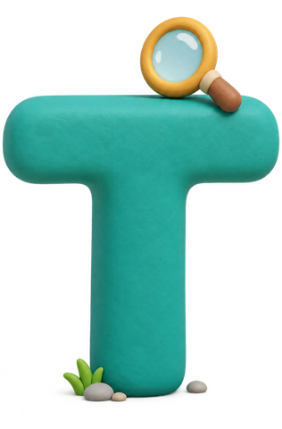
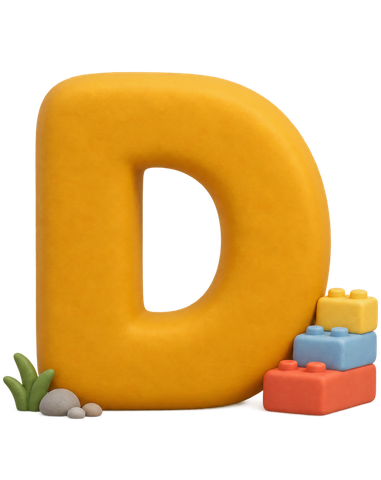
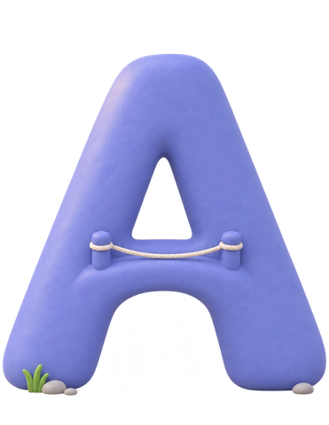

무엇을 만들었나
- 수업 모델ITDA 수업 단계(묻다·찾다·짓다·잇다)와 학년군별 AI 활용 단계(함께 보는 AI·대화하는 AI·만드는 AI)
- 프로젝트 9개저·중·고학년 각 3개, 모두 10차시. 교과 융합 6개와 특색 동아리 3개
- 수업·평가 자료과정안, 활동지, 루브릭, 생활기록부 기록 예시 [교사 입력: 자료 수]
- 수업용 웹앱전자칠판에서 바로 여는 한 파일 웹앱 [교사 입력: 웹앱 수]
수업을 잇다, 미래를 깨우다
교육과정과 수업과 평가를 하나로 잇고,
선생님들 간의 협력으로
AI·디지털 기반 수업 혁신을 연결하는 실천 공동체입니다.
저학년, 중학년, 고학년의 교실을 고르게 담았습니다.
부산의 바다와 시장, 산복도로와 항구에서 출발한 수업이라
다른 학교에서도 자기 동네로 바꾸어 쓸 수 있습니다.



걸음마다 잇는 것이 다릅니다.
질문은 삶과, 단서는 단서와, 생각은 결과물과, 배움은 세상과 이어집니다.
네 걸음마다 평가 장면을 두어 수업과 평가가 한 흐름으로 움직입니다.
같은 네 걸음을 걸어도 학년이 오를수록 AI를 쥐는 손이 달라집니다.
교사가 쥐던 AI를 모둠이 함께 쥐고, 마침내 학생이 직접 다룹니다.
단계마다 도구와 약속을 함께 정해 두었습니다.
아홉 개의 역을 지나 노선의 끝에 닿았습니다.
우리가 만든 것을 정리하고, 다른 학교 교실로 이어 가는 길을 제안합니다.